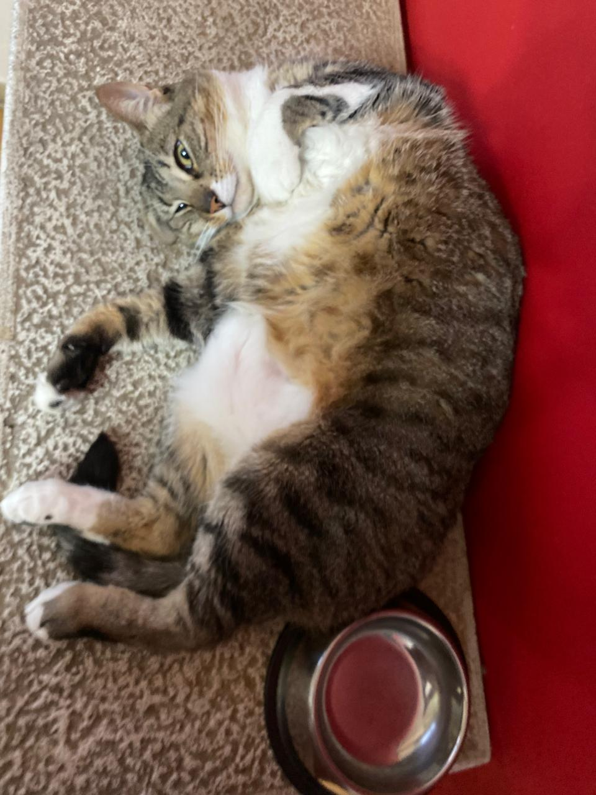
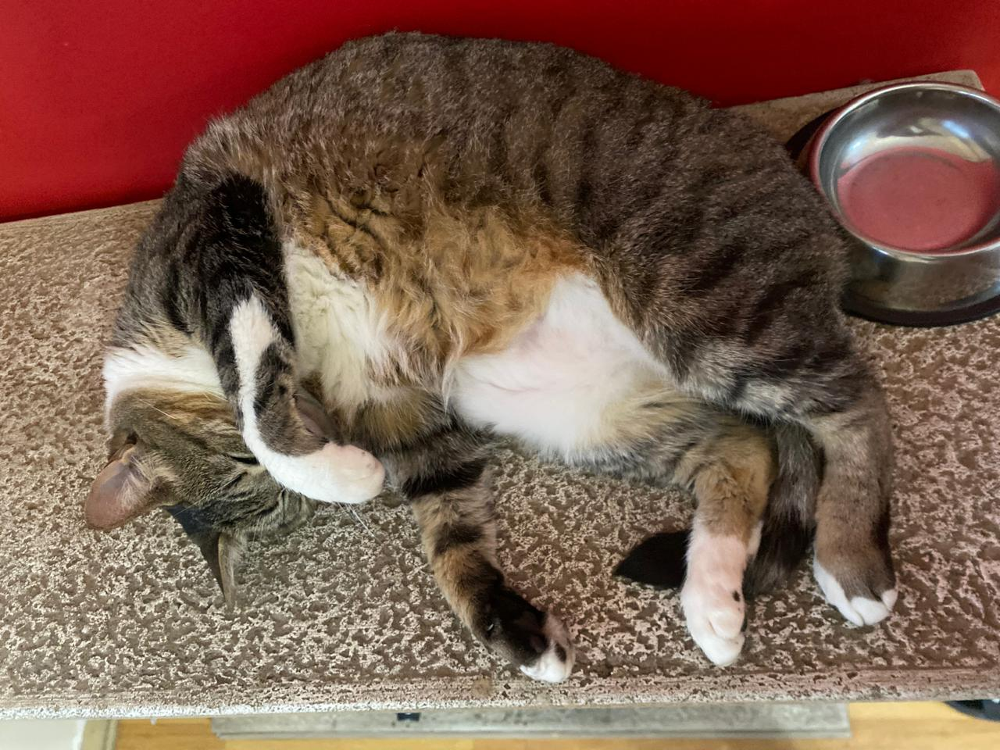

El rascador


El rascador es, sin dudas, la base de operaciones de Mia. Está pegado a la pared roja del living y tiene la ventaja (para ella) de estar a centímetros de su plato de comida, así que puede comer y dormir la siesta sin moverse casi nada. Se la puede encontrar ahí en cualquier momento del día, estirada, hecha un bollo, o mirando de reojo a cualquiera que pase cerca.